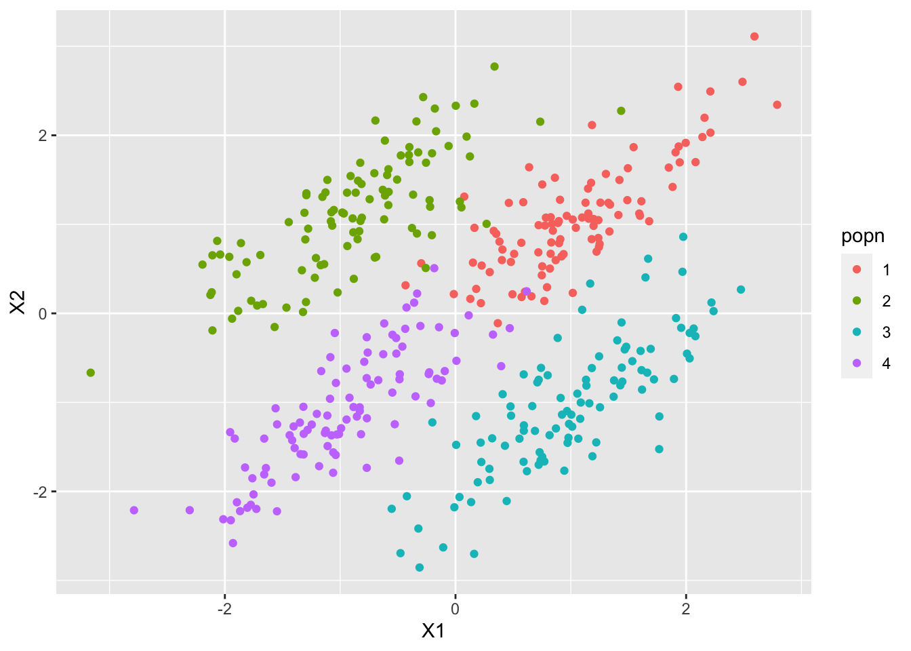

0.1 Computer tasks
Task 1
Let’s look again at the crabs dataset.
Use the
ldacommand to build a classifier to predict thesexof the crabs from the five numerical measurements (don’t use the index!).Test the predictive accuracy of your classifier by splitting the data into a training set and a test set. Report the predictive accuracy and find the confusion matrix.
Plot the histograms of the 1d projections of the data. Note that there can only be single projected variable here as there are just \(g=2\) groups.
Use your classifier to predict the sex of a crab that has BD=14, FL=15.5, RW=13.3, CL=31, and CW=36. What probability does the classifier give for this crab being male?
Create a new variable that indicates the species and the sex of the crab. With levels BM, BF, OM, OF. This can be done as follows:
Build a classifier to predict the species and sex of the crabs. Test its predictive accuracy, and provide some plots showing its effectiveness etc.
Task 2
In this question we will generate some data ourselves, and then see how successful LDA is at separating the populations.
- Generate 4 populations in 2d using the MVN distribution as follows:
mu1 <- c(1,1)
mu2 <- c(-1,1)
mu3 <- c(1,-1)
mu4 <- c(-1,-1)
Sigma <- matrix(c(0.5,0.4,0.4,0.5), nr=2)
library(mvtnorm)
S1 <- rmvnorm(100, mu1, Sigma)
S2 <- rmvnorm(100, mu2, Sigma)
S3 <- rmvnorm(100, mu3, Sigma)
S4 <- rmvnorm(100, mu4, Sigma)
X=rbind(S1,S2,S3,S4)
dat <- data.frame(popn=c(rep("1",100),rep("2",100),rep("3",100),rep("4",100)), X1=X[,1], X2=X[,2])
library(ggplot2)
qplot(x=X1,y=X2, colour=popn, data=dat)
Use LDA to train a classifier. Plot the 2d projection found, and use the
partimatcommand from theklaRpackage to visualise the discriminant regions.Experiment with different population means, different number of populations, and different covariance functions. What makes populations easy/hard to separate?
Task 3
With a bit of work, it is possible to get a prediction accuracy of over 80% for the MNIST data using linear discriminant analysis.
- Create a training set of 1000 images, and try using the
ldacommand to fit a linear classifier. Did it work?
load('mnist.rda')
X<- as.matrix(mnist$train$x[1:10000,])
y<-mnist$train$y[1:10000]
library(MASS)
lda(X,y)One way to fix problems such as colinearity, or in this case, zero variance, is to first use PCA on the data to rotate to set of variables with maximal variance. Do PCA on your training data using just the \(X\)s (the pixel intensities) and select the \(p=100\) most variable PC scores. This should leave you with a \(1000 \times 100\) matrix.
Do linear discriminant on the 100 PC variables you derived in the previous part. Plot the LDA projections of the data: Try plotting both the first 2 projected variables (coloured by the digit they represent), and the first 3 projected variables. Does using 3 dimensions help in separating the different populations?
Find the predictive accuracy of your classifier using the MNIST test data. Note that you will first need to project this data onto the \(p\) leading principal components. Find the confusion matrix and comment upon it.
- Does the predictive accuracy change if instead of using the first \(p=100\) principal component scores you use fewer or more? You can also try using larger training sets. The MNIST training data consists of \(60,000\) images - depending upon your computer you may be able to repeat the analysis with all \(60,000\) images. If so, how does this affect the prediction accuracy?